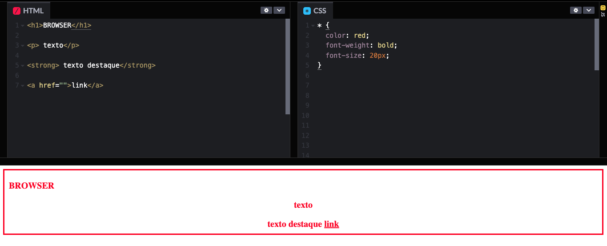
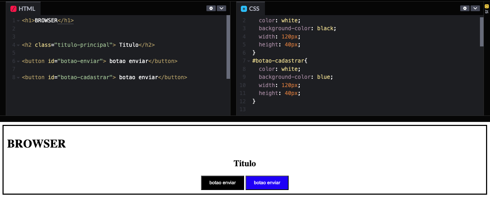
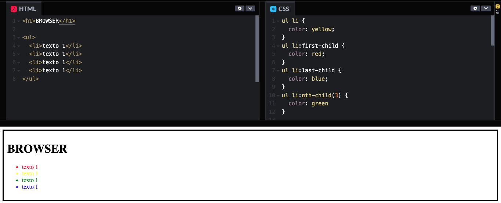

Tag
Um seletor de tag seleciona todas as ocorrências de um elemento HTML específico (como p para parágrafos ou a para links) e aplica o mesmo estilo CSS a todas elas.

Um seletor de tag seleciona todas as ocorrências de um elemento HTML específico (como p para parágrafos ou a para links) e aplica o mesmo estilo CSS a todas elas.
Um seletor de elemento aninhado (ou seletor de descendente) permite especificar um elemento HTML dentro de outro, garantindo que o estilo CSS seja aplicado apenas àquela ocorrência específica, sem afetar outros elementos semelhantes que possam estar presentes na página.
Para aplicar o mesmo estilo CSS a múltiplos elementos, podemos agrupá-los em um único bloco de declaração, separando os seletores por vírgula. Essa técnica, conhecida como "agrupamento de seletores", é distinta da técnica de "elemento dentro de elemento" (ou seletor de descendente). No agrupamento, o estilo será aplicado a todos os seletores listados, enquanto no seletor de descendente, o estilo é aplicado apenas ao elemento que está dentro de outro elemento específico.
O seletor universal (*) aplica estilos a todos os elementos de uma página web. Ele é frequentemente utilizado para definir estilos básicos ou para redefinir estilos predefinidos pelos navegadores, garantindo uma base consistente para o design do site.
O seletor classe é o mais utilizado quando se trata de html e css, isso porque podemos aplicar diversas regras para uma classe e tambem podemos usamor mais de uma classe para um elemento, isso quer dizer ele vai herdar a configuração da primeira classe e irá sobrescrever tudo que estiver na segunda classe
O seletor de ID é único em um documento HTML. Essa unicidade é fundamental para a integração com JavaScript, pois existe uma função que permite selecionar um elemento específico através do seu ID. Portanto, cada ID deve ser exclusivo em toda a página HTML.
Alguns seletores CSS possuem pseudo-classes que permitem aplicar estilos específicos quando o usuário interage com o elemento, como ao passar o mouse (:hover) ou ao clicar (:active). Por exemplo, podemos alterar a cor de fundo de um botão ou de um campo de entrada quando o usuário interage com eles.
O seletor de filho (child selector) em CSS é um tipo de combinador que permite selecionar elementos que são filhos diretos de um elemento pai específico. Ele é representado pelo sinal de maior que (>).
